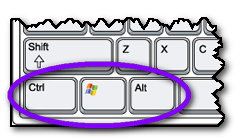

Load Pre-sets
(Shortcut Key = CTRL and WindowsKey and Alt and P)
Once you have created a pre-sets template, you can quickly load it into the Teacher Toolkit.
The keyboard shortcut requires holding the following three keys down:

and then pressing the letter P.